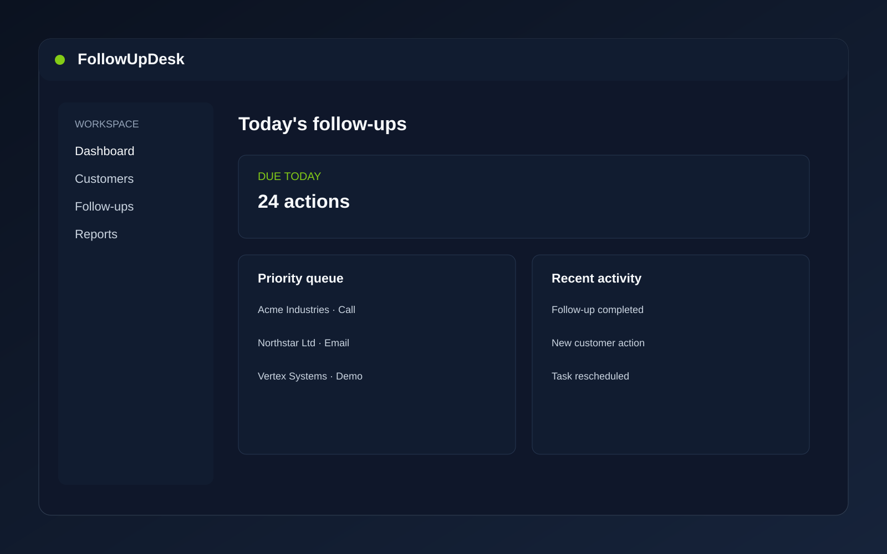

Focused workflow
Designed around follow-up management rather than a broad collection of unrelated modules.
A focused follow-up management system for businesses that need to keep customer actions and next steps organized.

Video demo placeholder
THE PROBLEM
FollowUpDesk is positioned as a focused workflow product rather than an oversized CRM suite. The goal is to give a business a practical place to organize customer actions and next steps.
The visual communicates the intended product direction; confirmed capabilities should be demonstrated directly rather than invented on the website.
Designed around follow-up management rather than a broad collection of unrelated modules.
The product can be evaluated as a foundation for a specific business workflow.